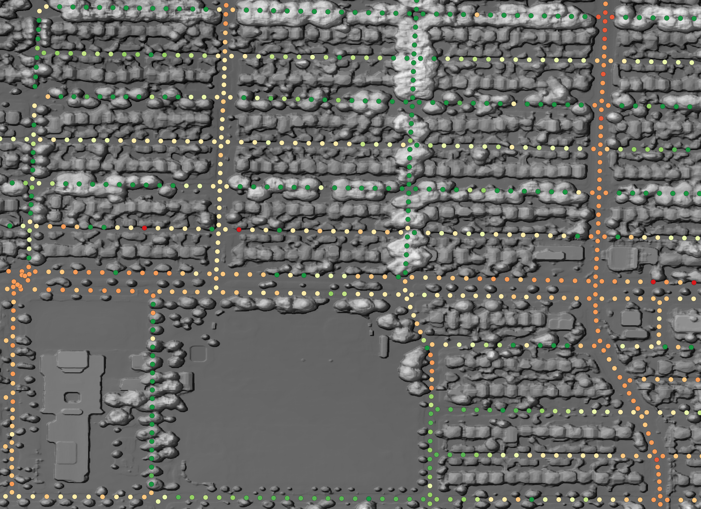

Visible Greenness Exposure
Exposure to residential greenness—such as parks, gardens, or other vegetated areas—has been linked to various health benefits, ranging from improved mental well-being to reduced chronic disease risk (Markevych et al. 2017; Labib, Lindley, and Huck 2020). Throughout this post, the terms greenness and greenspace will be used interchangeably. Greenspace exposure is commonly categorized into three types:
- Availability: The physical amount of greenspace
- Accessibility: The spatial proximity to greenspace
- Visibility: The visual perception of greenness (Labib, Lindley, and Huck 2020)
In our recent publication, we evaluated the availability of greenness via remote sensing–derived NDVI from a top-down (bird’s-eye) view, and further integrated a distance-weighted road network to assess accessibility around participants’ residences. The next logical step is to incorporate visibility, capturing how much greenery is actually seen within a person’s surroundings.
This post demonstrates how to download and prepare all necessary files for a viewshed-based visibility analysis. In the first section, I cover data acquisition and processing; in the second, I explain the main functions used for the analysis. My implementation is both lightweight and fast, maintaining high spatial resolution. Additionally, I showcase how these methods can be used to compute a Viewshed Greenness Visibility Index (VGVI), which is available in my CGEI R package.
Libraries
First, load all packages. If one of these packages is not installed, use the install.packages() function.
library(dplyr)
library(sf)
library(ggplot2)
library(ggthemes)
library(terra)
library(lidR)
library(future)
library(data.table)
Data
The data is being provided online at Zenodo.
dsm <- rast("https://zenodo.org/records/5061257/files/Vancouver_DSM_1m.tif")
dtm <- rast("https://zenodo.org/records/5061257/files/Vancouver_DTM_1m.tif")
Visibility Analysis
Greenspace is associated with multiple health benefits through a variety of pathways (Markevych et al. 2017; Dzhambov et al. 2020; Labib, Lindley, and Huck 2020). In a recent study (in submission), we analyzed health benefits based on the availability and accessibility of greenspace using a top-down, bird’s-eye approach. Visibility constitutes a third type of exposure assessment and represents the amount of greenspace observable from a given point (Labib, Lindley, and Huck 2020). While recent studies have adopted viewshed-based visibility analysis (Chamberlain and Meitner 2013; Tabrizian et al. 2020; Labib, Huck, and Lindley 2021), visibility measures are still underrepresented in current research (Labib, Lindley, and Huck 2020). The code below is primarily based on the methods described by Labib, Huck, and Lindley (2021) and their Python implementation of the Green Visibility Index. The overall process is illustrated in the figure below.

Conceptual design of greenspace visibility modelling (Labib, Huck, and Lindley 2021).
A line of sight is calculated from the observer to every point in the area of interest, determining which points are visible versus those that are hidden. To distinguish green from non-green points, a greenspace mask is applied. For simplicity in this post, the code is not fully optimized. A more optimized approach is available in my CGEI R package, which employs improved data structures and C++.
Rasterprofile
To determine the visibility of point B from point A, we first need to retrieve all raster cells between these two points. The rasterprofile function returns a matrix with the X- and Y-coordinates, height, and cell number for every cell along the line from A to B. Surprisingly, raster::extract is faster than terra::extract when used with a matrix.
rasterprofile <- function(r, x0, y0, x1, y1, resolution){
# Sample a raster along a straight line between two points
# Try to match the sampling size to the raster resolution
dx = sqrt((x0 - x1)^2 + (y0 - y1)^2)
nsteps = 1 + round(dx / resolution)
pointsZ <- cbind(x0 + (0:nsteps) * (x1 - x0) / nsteps,
y0 + (0:nsteps) * (y1 - y0) / nsteps)
rasterVals <- raster::extract(x = r, y = pointsZ, cellnumber = TRUE)
pointsZ <- cbind(pointsZ, rasterVals[,2], rasterVals[,1])
if (anyNA(pointsZ)) {
pointsZ <- pointsZ[stats::complete.cases(pointsZ),,drop = FALSE]
}
return(pointsZ)
}
Line of Sight
An observer at point A can see point B only if no object in between blocks the view. The lineOfSight function evaluates visibility for every raster cell between A and B. It calculates the tangent ⍺ on the change in height ùö´height (opposite side) and distance traveled (adjacent side) for each step. A point is visible if its tangent ⍺ is greater than the maximum tangent observed so far.
n R, this would require a for-loop to compare each point’s tangent to the maximum tangent seen so far, thus preventing vectorization. Native R code can be slow for these tasks, so I implemented the step in C++ using the Rcpp package.
#include <Rcpp.h>
using namespace Rcpp;
// [[Rcpp::export]]
NumericVector isVisibleC(NumericVector x) {
int n = x.size();
NumericVector out(n);
out[0] = 1;
double max_tangent = -9999;
for(int i = 1; i < n; ++i) {
double this_tangent = x[i];
if (this_tangent > max_tangent) {
max_tangent = this_tangent;
out[i] = 1;
} else {
out[i] = 0;
}
}
return out;
}
The lineOfSight function returns a data.table with the cell number and corresponding visibility status for every point between A and B. Visible cells are marked with 1 and non-visible cells with 0.
lineOfSight <- function(xy1, x0, y0, height0, resolution, dsm_data) {
# Get start XY from input
x1 <- xy1[1]
y1 <- xy1[2]
# Get the pixels in the line
pixels <- rasterprofile(r = dsm_data, x0 = x0, y0 = y0, x1 = x1, y1 = y1,
resolution = resolution)
# Distance traveled so far
distance_traveled = sqrt((y0 - pixels[,2])^2 + (x0 - pixels[,1])^2)
# Calculate tangent from delta height (opposite side) and distance traveled (adjacent side)
tangents <- (pixels[,3] - height0) / (distance_traveled * resolution)
# Is visible? Current tangent must be greater than max. tangent
visibility <- isVisibleC(tangents)
# Return cellnumber and visibility-value
data.table::as.data.table(cbind(pixels[,4], visibility))
}
Viewshed
Finally, we can calculate the visibility of all points within a specified buffer around point A using lineOfSight function. The viewshed function creates a circular raster (the start point plus a max_distance buffer) where 1 indicates visible points and 0 indicates non-visible points. To do this efficiently, we only need to compute the line of sight from the center to each boundary point of the circle, storing visibility information for intermediate cells along the way.
The animation below demonstrates how the viewshed function operates. We start with a raster of unknown visibility (yellow), then iteratively call lineOfSight to mark cells as visible (green) or non-visible (white).

As noted earlier, I have already implemented the viewshed function in my CGEI R package.
Examples
We first create a starting point to see how different resolutions affect visibility.
# Disable progress bar for terra::aggregate
terra::terraOptions(progress = 0)
sf_start <- sfheaders::sf_point(c(487616.2, 5455970)) %>%
st_sf(crs = st_crs(26910))
1. Resolution = 1m
Output-Raster-Cells: 360 000
Runtime: 124.3 milliseconds
Total visibility: 9.1%
viewshed_1 <- CGEI::viewshed_list(observer = sf_start,
dsm_rast = dsm,
dtm_rast = dtm,
max_distance = 300,
observer_height = 1.8)
plot(viewshed_1[[1]])

3. Resolution = 2m
Output-Raster-Cells: 90 000
Runtime: 27.12 milliseconds
Total visibility: 11.5%
viewshed_2 <- CGEI::viewshed_list(observer = sf_start,
dsm_rast = aggregate(dsm, 2),
dtm_rast = aggregate(dtm, 2),
max_distance = 300,
observer_height = 1.8)
plot(viewshed_2[[1]])

4. Resolution = 5m
Output-Raster-Cells: 14 400
Runtime: 9.21 milliseconds
Total visibility: 14.6%
viewshed_3 <- CGEI::viewshed_list(observer = sf_start,
dsm_rast = aggregate(dsm, 5),
dtm_rast = aggregate(dtm, 5),
max_distance = 300,
observer_height = 1.8)
plot(viewshed_3[[1]])

Network Visible Greenspace
A practical use case for the viewshed algorithm is to calculate the visible greenness in a person’s neighborhood by examining visibility along roads and paths.
Greenspace Mask
To determine how much of the visible area is green, we need a vegetation mask that differentiates green from non-green pixels. For this example, we use the Vancouver Land Cover Classification 2014 - 2m LiDAR (Raster). After opening the dataset in ArcGIS and exporting it as a TIFF, the class values can be read from the documentation.
| Value | Level 1 | Level 2 | Level 3 | Criteria |
|---|---|---|---|---|
| 1 | Built-up | Buildings | Identified using shape/size, shadow cast, height, relative canopy height, texture. | |
| 2 | Paved | Everything from sidewalks and alleys to highways. | ||
| 3 | Other Built | Not concrete/asphalt built surfaces or building roofs. Sports surfaces (artificial turf and running tacks), possibly transit or rail areas, other impervious surfaces, etc. | ||
| 4 | Bare | Barren | Beaches, alpine rock, shoreline rock, etc. Lack of vegetation. Likely not soil (colour/context suggests no organic matter and/or imperviousness). Also quarries, gravel pits, dirt roads. | |
| 5 | Soil | Agricultural soils (could be light or dark), cleared/open areas where darker colours indicate organic matter present (as compared to, e.g. sand), potentially riverine/alluvial deposits. | ||
| 6 | Vegetation | Tree canopy | Coniferous | Predominantly coniferous (\>75%) |
| 7 | Deciduous | Predominantly deciduous (\>75%) | ||
| 8 | Shrub | Woody, leafy, and generally rough-textured vegetation shorter than trees (approx. | ||
| 9 | Grass-herb | Modified Grass-herb | Crops, golf course greens, city park grass, lawns, etc. | |
| 10 | Natural Grass-herb | Alpine meadows, near-shore grass areas, bog/wetland areas. | ||
| 11 | Non-photosynthetic vegetation | Dead grass, drought stressed vegetation, could include log | ||
| 12 | Water | Lakes, rivers, inlets, irrigation channels, retention ponds, pools, etc. | ||
| 13 | Shadow | Dark pixels with v/ low reflectance values. Image features not easily visible. Compare w/ RapidEye image for shadow | ||
| 14 | Clouds/Ice | Very bright pixels, that are not high-reflectance features from built-up areas. |
For demonstration purposes, we will treat all vegetation classes as green.
# Load LandCover
landCover <- rast("https://zenodo.org/records/5061257/files/Vancouver_LULC_2m.tif")
# Select Vegetation
greenspace <- landCover %in% c(6:10); invisible(gc())
# Plot to compare LandCover and vegetation mask
par(mfrow = c(1,2))
landCover %>%
crop(st_buffer(sf_start, 300)) %>%
plot(legend = FALSE)
points(st_coordinates(sf_start)[1], st_coordinates(sf_start)[2],
col = "blue", cex = 3, pch = 20)
greenspace %>%
crop(st_buffer(sf_start, 300)) %>%
plot(legend = FALSE)
points(st_coordinates(sf_start)[1], st_coordinates(sf_start)[2],
col = "blue", cex = 3, pch = 20)

Viewshed Greenness Visibility Index
The VGVI (Viewshed Greenness Visibility Index; (Labib, Huck, and Lindley 2021)) represents the proportion of visible greenspace to the total visible area. Its values range from 0 to 1, where 0 = no visible greenspace and 1 = all visible cells are green. Applying the vgvi function below to viewshed_1 returns 0.91, meaning 91% of the visible area is vegetated.
In Labib, Huck, and Lindley (2021), the authors applied a distance-decay function to account for the decreasing visual prominence of an object with increasing distance from the observer. I will address distance-decay models in a future post.
vgvi <- function(viewshed, greenspace) {
# Get XY coordinates that are visible
xy <- viewshed %>%
terra::xyFromCell(which(viewshed[] == 1))
# Intersect XY with greenspace mask
output <- greenspace[terra::cellFromXY(greenspace, xy)] %>%
unlist(use.names = FALSE)
# Proportion of visible green
return(sum(output == 1) / length(output))
}
Network Analysis
We can also leverage the DRIGLUCoSE R package from our recent publication to calculate a road network and then assess visible greenspace along it. For more details on DRIGLUCoSE, refer to the GitHub repository.
# Download and process road network from OSM data
aoi.osm <- DRIGLUCoSE::osm_roads(x = sf_start, dist = 10, speed = 75)
# Calculate isodistances
aoi.isodistances <- DRIGLUCoSE::isodistances(x = sf_start %>% mutate(tag = 1),
tag = "tag", road_network = aoi.osm,
speed = 75,
isochrones_seq = seq(1, 10, 1))
The figure below shows the isodistances with the red dot indicating the starting point. We will calculate the proportion of visible greenspace every 10 meters.

To evaluate network visibility, we use the vgvi function from the CGEI package to calculate the VGVI along the road network. In this example, we sample points every 5 meters along the isodistances. A 2m resolution would be sufficient for a larger study because it does not differ much from 1m in practice—but here the total runtime at 1m resolution is still acceptable (only 4 seconds using 22 cores).
output <- CGEI::vgvi(observer = aoi.isodistances,
dsm_rast = dsm,
dtm_rast = dtm,
greenspace_rast = greenspace,
max_distance = 300,
observer_height = 1.8,
spacing = 5,
cores = 22)
## Warning in st_cast.sf(., "LINESTRING"): repeating attributes for all
## sub-geometries for which they may not be constant
Results
The results of the VGVI appear in the figure below.
output %>%
tmap::tm_shape() +
tmap::tm_dots(col = "VGVI", shape = 20, size = 0.25,
palette = "RdYlGn", n = 10,
title = "Visible Greenspace") +
tmap::tm_layout(legend.outside.position = "right",
legend.position = c(-0.25, 0.62),
legend.outside.size = .15,
legend.title.size = 1.35,
legend.text.size = 1,
panel.show = F,
frame = FALSE)

To determine the mean VGVI for the observer in the center, we simply take the average of all measurements. More sophisticated approaches might apply linear or logistic weighting to account for distance, as shown in our recent publication.
round(mean(output$VGVI), 2)
## [1] 0.47
A mean value of 0.47 indicates that 47% of the visible area along the network is vegetated.
One notable limitation of the viewshed algorithm is its inability to accurately account for eye-level visibility when the observer is under a tree. This is because the LiDAR-derived DSM blocks all lines of sight under the canopy.

In the histogram above, many points have a GVI of 1. I have plotted the DSM and the GVI points along the route network in QGIS.
The image shows that these green points are located underneath trees, so no lines of sight extend beyond the canopy. As a result, all visible cells are green, leading to a GVI of 1.
Although we can incorporate a distance-decay function or measure actual activity space rather than potential activity space, these are topics for future posts. Regardless, there is a clear variation in GVI values indicating areas with higher versus lower visible greenness.
Conclusion
In summary, this post demonstrates a fast, lightweight, and parallelizable approach to measuring greenspace visibility using open-source R packages. By comparing resolutions from 1m to 5m, we found that 2m provides a practical balance between accuracy and speed, making large-scale applications feasible. However, the method cannot fully capture eye-level views under tree canopies, a challenge that underscores the need for more sophisticated modeling and sensor data. Despite this limitation, viewshed-based exposure assessments can add a valuable visual dimension to health geography studies, complementing traditional availability and accessibility measures of greenspace. Future work may explore integrating actual GPS-tracked routes and distance-decay functions, allowing for more nuanced activity-space models. We encourage researchers and urban planners to adopt and refine these methods, helping to deepen our collective understanding of how visible greenery influences wellbeing.
References
Chamberlain, Brent C., and Michael J. Meitner. 2013. “A Route-Based Visibility Analysis for Landscape Management.” Landscape and Urban Planning 111 (March): 13–24. https://doi.org/10.1016/j.landurbplan.2012.12.004.
Dzhambov, Angel M., Matthew H.E.M. Browning, Iana Markevych, Terry Hartig, and Peter Lercher. 2020. “Analytical Approaches to Testing Pathways Linking Greenspace to Health: A Scoping Review of the Empirical Literature.” Environmental Research 186 (July): 109613. https://doi.org/10.1016/j.envres.2020.109613.
Labib, S.M., Jonny J. Huck, and Sarah Lindley. 2021. “Modelling and Mapping Eye-Level Greenness Visibility Exposure Using Multi-Source Data at High Spatial Resolutions.” Science of The Total Environment 755 (February): 143050. https://doi.org/10.1016/j.scitotenv.2020.143050.
Labib, S.M., Sarah Lindley, and Jonny J. Huck. 2020. “Spatial Dimensions of the Influence of Urban Green-Blue Spaces on Human Health: A Systematic Review.” Environmental Research 180 (January): 108869. https://doi.org/10.1016/j.envres.2019.108869.
Markevych, Iana, Julia Schoierer, Terry Hartig, Alexandra Chudnovsky, Perry Hystad, Angel M. Dzhambov, Sjerp de Vries, et al. 2017. “Exploring Pathways Linking Greenspace to Health: Theoretical and Methodological Guidance.” Environmental Research 158 (October): 301–17. https://doi.org/10.1016/j.envres.2017.06.028.
Tabrizian, Payam, Perver K. Baran, Derek Van Berkel, Helena Mitasova, and Ross Meentemeyer. 2020. “Modeling Restorative Potential of Urban Environments by Coupling Viewscape Analysis of Lidar Data with Experiments in Immersive Virtual Environments.” Landscape and Urban Planning 195 (March): 103704. https://doi.org/10.1016/j.landurbplan.2019.103704.